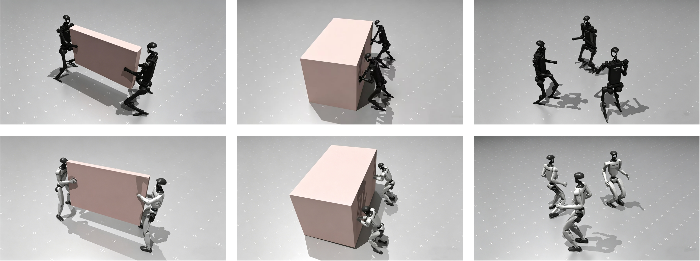
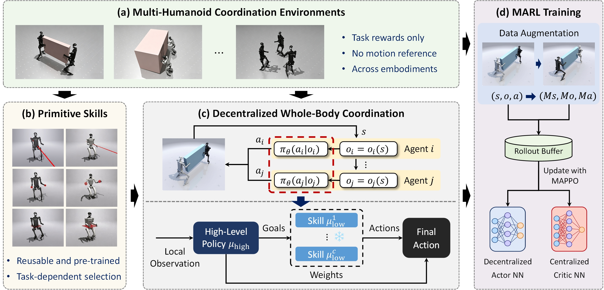
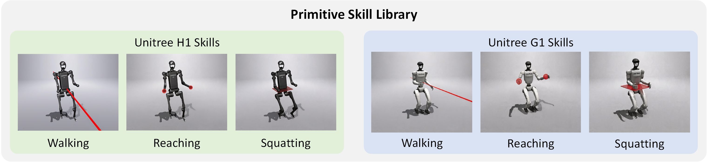

Abstract
Coordinated multi-humanoid loco-manipulation is promising yet challenging due to high-dimensional whole-body control, decentralized decision making, and scalability. While recent reinforcement learning methods have improved single-humanoid whole-body control, extending them to the multi-humanoid setting remains nontrivial and often requires substantial reward engineering or task-specific design. We propose MASkillBlender, a general multi-agent reinforcement learning framework to achieve decentralized multi-humanoid whole-body coordination. By learning a shared decentralized high-level policy over reusable pre-trained single-humanoid skills, MASkillBlender enables coordinated behaviors using only task-level rewards, without requiring task-specific motion references. To improve learning efficiency, we further introduce a permutation-based data augmentation strategy for homogeneous multi-humanoid systems, and theoretically show that the permuted samples preserve the policy-gradient direction of the original samples under the homogeneous Markov game formulation. We evaluate MASkillBlender on multiple multi-humanoid coordination tasks across two humanoid embodiments. Simulation results demonstrate that the proposed framework consistently achieves strong task performance and enables coordinated behaviors across different tasks and humanoid embodiments.
Framework

Primitive Skills
MASkillBlender builds its decentralized whole-body control policy
upon a reusable library of task-agnostic primitive skills. We consider three primitive skills,
Walking, Reaching, and
Squatting, which provide basic motor capabilities for downstream
multi-humanoid coordination. The primitive skills are pre-trained separately and kept fixed
during downstream policy training.

Walking, Reaching, and
Squatting.
Walking (H1)
Reaching (H1)
Squatting (H1)
Walking (G1)
Reaching (G1)
Squatting (G1)
Multi-Humanoid Coordination Tasks
We evaluate MASkillBlender on three representative multi-humanoid coordination tasks: Carry, Push, and Move. In Carry, two humanoids collaboratively transport a large box to a target position. In Push, two humanoids collaboratively push a heavy box toward a target position. In Move, three humanoids move toward their assigned targets while avoiding inter-humanoid collisions.
Unitree H1
Carry (H1)
Push (H1)
Move (H1)
Unitree G1
We further evaluate the same coordination tasks on the 21-DoF Unitree G1 to examine the applicability of MASkillBlender across different humanoid embodiments.
Carry (G1)
Push (G1)
Move (G1)
Comparison with TeamHOI
We compare MASkillBlender with an adapted TeamHOI baseline on the Unitree H1 tasks. The task environments and task-level information are kept consistent across methods whenever possible, while TeamHOI retains its reference-based PPO/AMP training paradigm and Transformer policy architecture. The following videos show representative TeamHOI rollouts corresponding to the MASkillBlender results shown above.
TeamHOI: Carry (H1)
TeamHOI: Push (H1)
TeamHOI: Move (H1)
Two-Humanoid Box Exchange
To extend the evaluation beyond the manipulation of a single large shared object, we introduce a two-humanoid box-exchange task on Unitree H1. Two humanoids stand on opposite sides of a table and first move their assigned boxes to an exchange region. After the stage transition, they exchange box assignments and move the received boxes to the corresponding final target positions.
Two-Humanoid Box Exchange (H1)
Long-Horizon Coordination from Asymmetric Initial Configurations
We further evaluate long-horizon execution from asymmetric initial configurations. The humanoids first use pre-trained primitive skills to approach predefined poses near the object. If one humanoid arrives earlier, it waits until the other is ready. The learned decentralized Carry or Push policy is then activated for coordinated object manipulation. No additional training of the coordination policy is required for these demonstrations.
Long-Horizon Carry (H1)
Long-Horizon Push (H1)
Sim2Sim Transfer
We evaluate the cross-simulator transferability of MASkillBlender by deploying the learned Unitree H1 policies from NVIDIA Isaac Gym to MuJoCo. For Carry, due to the sensitivity of contact-rich object manipulation, the Isaac Gym policy is briefly continued under broader domain randomization before deployment. For Move, the policy is transferred directly to MuJoCo without additional training.